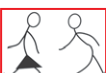

1. Eleza maana ya kupasi mpira katika mpira wa miguu.
2. Kwa nini kukokota mpira ni stadi muhimu katika mpira wa miguu?
3. Kwa nini kukaba ni muhimu katika mchezo wa mpira wa miguu?
Sheria za msingi za mpira wa miguu
Zipo sheria 17 za mpira wa miguu, katika hatua hii utajifunza sheria tano zifuatazo:
1. Mechi rasmi ya mpira wa miguu huchezwa kwa dakika 90, dakika 45 kwa kila kipindi na mapumziko ya dakika 15.
2. Katika mechi rasmi idadi ya wachezaji kwa kila timu ni wachezaji 11 akiwemo golikipa.
3. Bao huhesabiwa endapo mpira utavuka mstari wa goli kikamilifu.
4. Kuotea hutokea pale mchezaji anapopokea mpira akiwa mbele ya walinzi wa timu pinzani bila kuwepo mchezaji mwingine wa timu pinzani isipokuwa golikipa.
5. Faulo hutokea endapo mchezaji atamchezea mpinzani wake vibaya.
